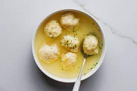

Dumplings

Description
Dumplings are pieces of cooked dough, often wrapped around a filling. The filling can be a variety of things.
Ingredients
- All-purpose flour
- Baking powder
- Salt
- Milk
- Stew or soup, for cooking and serving
Steps
- Sift the flour, baking powder, and salt together in a bowl
- Add milk and mix. Let it rest for a few minutes
- Drop batter in soup and cook
- Serve the dumplings and soup!